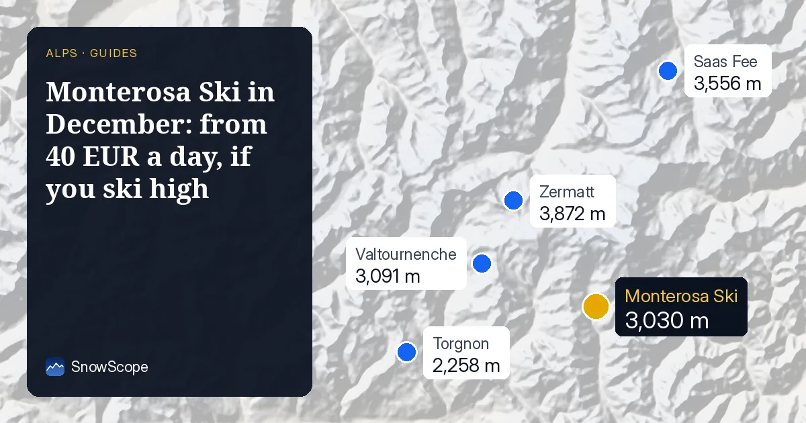

Monterosa Ski فدجنبر: من 40 EUR للنهار، إلا تزلجتي الفوق
Monterosa Ski من القلال ديال المحطات الكبار فإيطاليا اللي نهار ديال دجنبر يقدر يسوى 40.00 EUR، حيت الثمن كيتبدل مع التاريخ. المشكل هو العلو: فالتاريخ ديال التلج ديالنا، التحت ديال التيليسييجات تقريبا بلا تلج فدجنبر عادي، والفوق مغطي بتلج كثير.
شوف توقعات التلج مباشرة ديال Monterosa Ski فالتطبيق ديال SnowScopeالعلو ديال التلج، التنبيهات والخريطة 3D، فابور.
باص واحد، بزاف ديال الأثمنة
Monterosa Ski ما كيبيعش باص ديال النهار بثمن ثابت. إلا شريتيه أونلاين، الباص ديال نهار واحد للكبار كيتبدل مع التاريخ، من 40.00 EUR فالأيام الرخيصة حتى ل 71.00 EUR فالأيام العامرة. فأول دجنبر، قبل الزحام ديال الكريسماس، هو الوقت باش تقلب على الثمن الرخيص.
بهاد الفلوس عندك منطقة كبيرة مرسومة: 72 كم ديال البيستات و 37 تيليسييج، من 1207 م حتى ل 3030 م، يعني فرق علو ديال 1823 م. شوف الثمن ديال النهارات ديالك بالضبط فالصفحة الرسمية قبل ما تحجز الباقي.

التحت خاوي، الفوق عامر بالتلج
حتى محطة فهاد السلسلة ما فيها هاد الفرق الكبير بين التيليسييجات اللي لتحت واللي لفوق. ف 1207 م العلو العادي فدجنبر غير 6 سم، وحتى فدجنبر كريم، 1 شتوة من 10، كيبقى تحت 24 سم. التلج اللي كيبقى عادة ما كيستقرش تما قبل 1 دجنبر. حسب حسابك تهبط فالتيليسييج فآخر النهار.
فالوسط ديال الجبل، ف 2118 م، أحسن ولكن ماشي مضمون: 36 سم فدجنبر عادي، أقل من 14 سم فدجنبر ضعيف وكثر من 67 سم فدجنبر كريم. الفوق عالم آخر. ف 3030 م دجنبر عادي فيه 124 سم، الضعيف باقي 55 سم والكريم 212 سم. نهار 15 دجنبر العلو العادي الفوق هو 127 سم.
سيمانة بسيمانة: بقى الفوق
فالوسط ديال الجبل، كان 30 سم ولا كثر ف 46 % ديال الشتوات اللي فاتت فالسيمانة الأولى ديال دجنبر، 59 % فالتانية، 67 % فالتالتة و 80 % فالسيمانة ديال 22-28 دجنبر. ل 50 سم ولا كثر النسب غير 20 %، 26 %، 28 % و 35 %.
فالفوق الصورة ساهلة: 30 سم ولا كثر ف 98 % ديال الشتوات فالسيمانة الأولى وفكل وحدة من 46 شتوة ديالنا من بعد، و 50 سم ولا كثر ف 87 % حتى ل 96 % ديال الشتوات طول الشهر. لتحت، 30 سم ولا كثر وقعات غير ف 4 % ديال الشتوات فأحسن الحالات، فالسيمانة الأخيرة. رحلة ديال دجنبر هنا معناها تتزلج فالتيليسييجات اللي الفوق وما تعولش على البيستات اللي لتحت.
هاد الموسم بدا بشوية: نهار 13 نونبر التقدير ديالنا كيعطي 1 سم فالوسط و 7 سم فالفوق، مع تقريبا 26 سم و 42 سم ديال التلج الجديد فال 7 أيام الجايين. التوقعات ديال جوج سيمانات للوسط وما فوق كتعطي من 22 حتى ل 61 سم، مجال ماشي وعد.
Monterosa Ski ولا Pila
Pila، فوق Aosta، هي الخطة الساهلة: ثمن واحد للكبار ديال 60.00 EUR للنهار طول الموسم و 322.00 EUR ل 6 أيام. المنطقة المرسومة ديالها صغر، 56 كم ديال البيستات و 16 تيليسييج بين 1533 م و 2723 م.
ف Pila التلج مفرق بشكل أحسن. التحت ديالها ف 1533 م فيه 34 سم فدجنبر عادي مقابل 6 سم ف 1207 م ف Monterosa، والوسط (2128 م) 45 سم مقابل 36 سم. ولكن الفوق ديال Pila ف 2723 م فيه عادة 80 سم، قل بزاف من 124 سم ف 3030 م ف Monterosa. إلا لقيتي نهار رخيص وما عندك مشكل تبقى الفوق، Monterosa Ski كيعطيك جبل كثر بفلوس قل. وإلا بغيتي ثمن ثابت وتلج لتحت شوية، Pila هي الاختيار الساهل.
واش دجنبر تبدل هنا؟
تقريبا لا، وهادشي نادر. إلا قارنا أول 15 شتوة ف التاريخ ديالنا (1980-81 حتى ل 1994-95) مع آخر 15 (2011-12 حتى ل 2025-26)، المعدل ديال دجنبر بقى 37 سم فالوسط و 126 سم فالفوق؛ لتحت طلع من 4 سم ل 6 سم.
كل شتوة كتختلف بزاف. الشتوة اللي فاتت، دجنبر كان فيه فالمعدل 22 سم فالوسط و 87 سم فالفوق. أضعف دجنبر، 2015-16، كان فيه 5 سم فالوسط و 38 سم فالفوق؛ والكريم بزاف، 1982-83، كان فيه 82 سم و 262 سم.
نصايح للي كيتزلجو
- قارن بزاف ديال التواريخ فدجنبر فالصفحة الرسمية: الثمن ديال النهار أونلاين ما بين 40.00 و 71.00 EUR.
- ختار السيمانة ديال 22-28 دجنبر إلا بغيتي التلج فالوسط ديال الجبل: 30 سم ولا كثر ف 80 % ديال الشتوات اللي فاتت.
- فأول دجنبر، بقى فالتيليسييجات اللي فوق 2118 م؛ التحت ف 1207 م عادة تقريبا بلا تلج.
- قرا النشرة ديال الانهيارات قبل أي خروج من البيست: الفوق فيه تلج كثير والجهة اللي لتحت ضعيفة.
خرائط أخرى (مواقع خارجية)
المراجع والمصادر
- Monterosa Ski, official dynamic pricing page 2026-27 monterosaski.eu/en/tariffazione-dinamica-monterosa-ski-19318
- Pila, official daily ski pass prices 2026-27 pila.it/en/skipass-pila/daily-skipass/
- SnowScope, December snow at three heights and today's snow map snowscope.app/
على هاد الأرقام
الأرقام ديال التلج: التاريخ ديال التلج ديال SnowScope، 46 شتوة اللي فاتت (1980-81 حتى ل 2025-26) فتلاتة ديال العلوات فكل محطة (موديل ديال اللي فات مصحح بالعلو: تقدير لمنطقة، ماشي قياسات ديال المحطة)؛ أرقام دجنبر محسوبة من العلو اليومي ديال التلج فهاد الشتوات. التلج دابا والتوقعات ديال جوج سيمانات: توقعات SnowScope (من ECMWF و GFS، مجال ماشي وعد). التيليسييجات والبيستات: الخريطة ديال OpenSkiMap. الأثمنة: الصفحات الرسمية اللي لتحت، متشافة نهار 2026-11-13؛ الأثمنة تقدر تتبدل، شوف قبل ما تحجز.
النشرات الرسمية ديال الانهيارات: AINEVA – Associazione Interregionale Neve e Valanghe
كيفاش تستاشهد بهاد المقال
للبحث، التعليم ولا الصحافة: الأرقام والرسومات تقدر تعاود تخدم بيهم بحرية تحت CC BY 4.0 مع هاد الاستشهاد.
SnowScope (2026), Monterosa Ski فدجنبر: من 40 EUR للنهار، إلا تزلجتي الفوق, https://snowscope.app/blog/ar/2026/11/monterosa-ski-december-dynamic-price-snow-2026.html, تشاف ف 2026-11-14
SnowScope (Atlas Labs). (2026, November 14). Monterosa Ski فدجنبر: من 40 EUR للنهار، إلا تزلجتي الفوق. SnowScope snow reports. https://snowscope.app/blog/ar/2026/11/monterosa-ski-december-dynamic-price-snow-2026.html
BibTeX
@misc{snowscope2026monterosaskidecemberdyna,
author = {{SnowScope (Atlas Labs)}},
title = {Monterosa Ski فدجنبر: من 40 EUR للنهار، إلا تزلجتي الفوق},
year = {2026},
month = nov,
howpublished = {\url{https://snowscope.app/blog/ar/2026/11/monterosa-ski-december-dynamic-price-snow-2026.html}},
note = {Published 2026-11-14 16:31 UTC; accessed 2026-11-14}
}· CC BY 4.0 · الطريقة، الداتا والأدوات →
Monterosa Ski: التلج والحرارة حسب العلو، هاد الشتا مقارنة مع اللي فاتت (الأدوات) →
تابع Monterosa Ski
فابور: ميساج ملي يجي التلج، والتوقعات كل صباح.